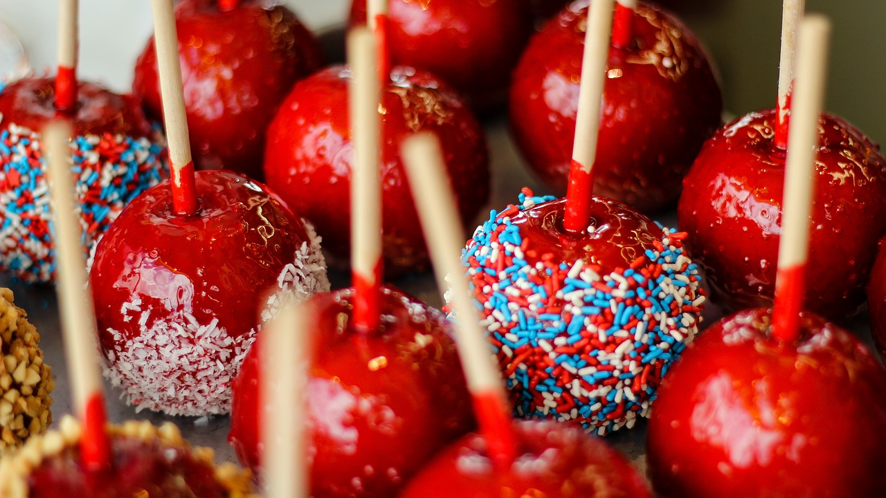

Snow White's Poison Apples

The Poison Apples Instructions
Great candy apples and great treats - but be careful, they are poisonous! AHAHA
Ingredients for the delicious apples
- 6 Fuji apples (or any other type of unwaxed firm apples)
- 1/2 cup light corn syrup
- 2 cups sugar
- 3/4 cup water
- Food colouring (your choice of colour! red, black or purple work nicely for poison apples).
How to make Snow White's Poison Apples
These are going to be so tasty!
- Wash and dry your unwaxed apples, making sure they are completely dry because bubbles can form when you coat them in the poison candy if they are still wet.
- Insert the skewers into the apples and set them to the side
- Cover a baking sheet with parchment paper and grease the paper with butter
- In a saucepan, combine the corn syrup, the sugar, the water and the food coloring and, over medium high heat, bring the mixture to a boil, stirring until the sugar dissolves
- Once the sugar is dissolved, lower the heat to medium and let it boil, without stirring, until it reaches hard crack stage. Temperature should read 300/310 degrees on a candy thermometer. Another way of knowing is to drip some of the candy in a cup with cold water. If the candy solidifies, it is ready
- Dip the apples into the candy, swirling them to get rid of any excess, and set them in the prepared baking sheet
- Let them cool for at least 30 minutes before serving.
How to eat your poison apples
haha, just kidding, bite down and enjoy.
Congratulations, your Poisoned Candy Apples are now complete
This recipe was sourced from Olivia's Cuisine https://www.oliviascuisine.com/poison-apples/
Return to recipes